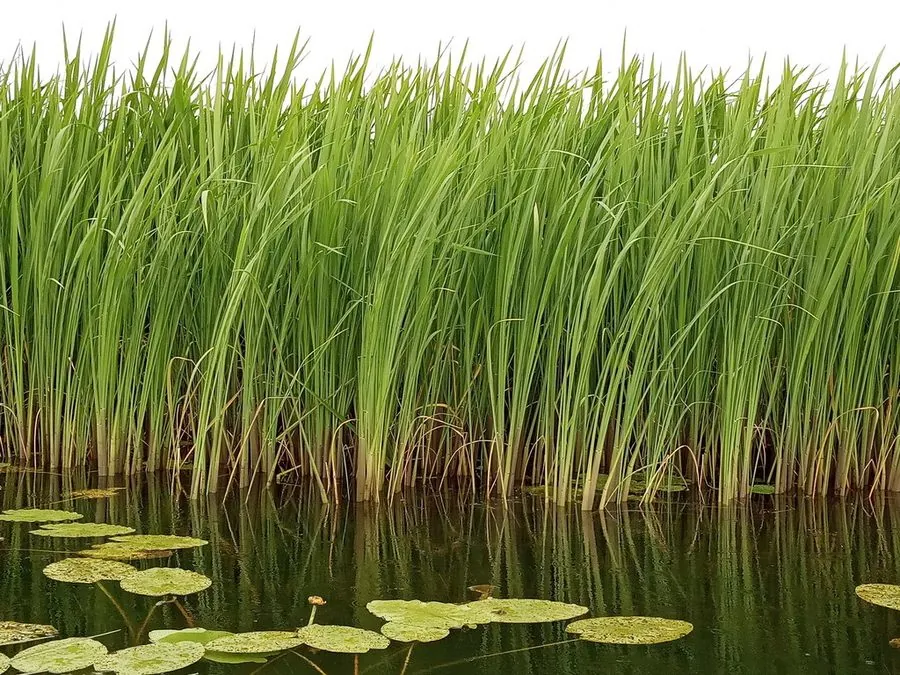

水生植物 · 植物界
茭白 Zizania latifolia

禾本科多年生水生草本，茎被黑粉菌感染后膨大形成茭白，是江南著名的水生蔬菜，原产中国，又称菰。
- 分类
- 门被子植物门纲木兰纲目禾本目科禾本科属菰属
- 栖息环境
- 池塘、河沟、浅水田等浅水湿地，喜温暖、肥沃
- 地理分布
- 原产中国与东亚，中国长江中下游及江南水乡广泛栽培
- 保护级别
- 暂无评估
物种志
茭白为禾本科菰属多年生水生草本，株高 1–2 米，具匍匐根状茎，茎直立、中空。叶片披针形，长 1 米以上。花序为大型圆锥花序，花期秋季；不感染的植株可结出细长的颖果，即“菰米”。栽培植株的茎被菰黑粉菌感染后会膨大，形成肉质茭白。
茭白原产中国，栽培历史悠久，江南水乡的池塘和浅水田是其主要产区。它之所以能形成可食用的茭白，是因为嫩茎被菰黑粉菌感染，菌丝刺激茎部细胞膨大，形成肥嫩的肉质茎；若植株未被感染，就会正常开花结实，结出的菰米在古代曾作粮食。茭白肉质洁白、口感鲜嫩，可炒食或做汤，与莼菜、鲈鱼同为江南名菜的重要原料。
形态与习性
- 株高1–2 米，茎直立中空
- 花期秋季，不被感染的植株开花
- 果期不感染植株结菰米（颖果）
- 光照喜充足阳光
- 水分浅水，水深 10–50 厘米
- 土壤肥沃、富含腐殖质的水田淤泥
- 繁殖根状茎分株繁殖
- 主要用途茭白食用（水生蔬菜）、叶片编织、湿地净化
趣味知识
- 茭白其实是菰的嫩茎被菰黑粉菌感染后膨大形成的肉质茎。
- 未被感染的菰会正常开花结实，结出的种子叫“菰米”，古代曾作粮食。
- 茭白是江南著名的水生蔬菜，肉质洁白、口感鲜嫩。
- 茭白栽培靠根状茎分株繁殖，水田需要保持浅水。